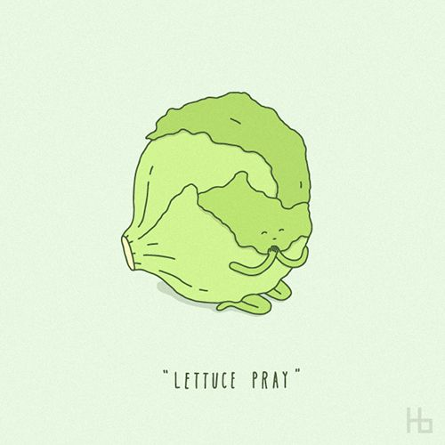
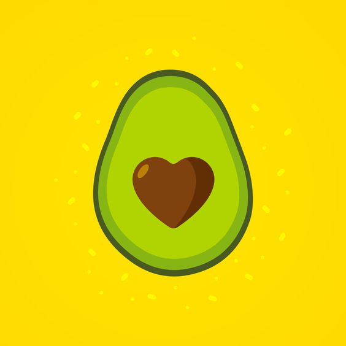

Предварительно вымыть все овощи и дать им обсохнуть

- Листовой салат выложите на блюдо. Сверху на салат выложите рукколу;
- Огурцы нарежьте соломкой или полукружиями. Равномерно посыпьте ими салатные листья;
- Авокадо очистите, нарежьте ломтиками или кубиками, выложите сверху на салат;

- Полейте авокадо лимонным соком, чтобы не темнел;
- Салат из огурцов, авокадо и зелени посолите морской солью, поперчите, полейте оливковым маслом;
- Посыпьте салат с авокадо обжаренным кунжутом и подавайте.
Приятного аппетита!
Предыдущая страница
На главную страницу